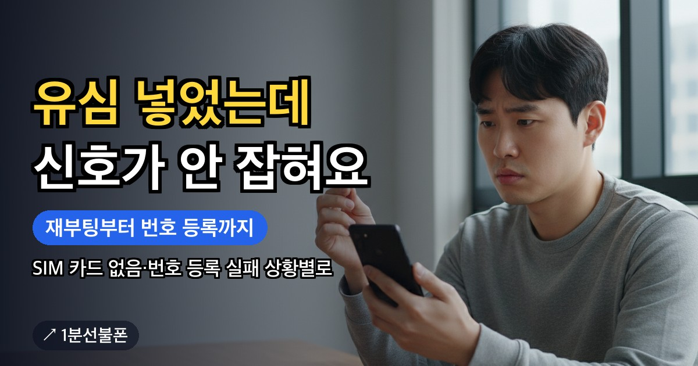

개통은 끝났다는데 휴대폰에 신호가 잡히지 않거나 SIM 카드 없음이 뜨면 당황스럽습니다. 앤텔레콤 공식 FAQ가 가장 먼저 안내하는 방법은 유심을 끼운 뒤 전원을 2~3회 이상 껐다 켜는 것입니다. 그래도 안 된다면 화면에 뜨는 문구로 상황을 나누고, 그에 맞는 순서대로 하나씩 해 보면 됩니다.
- 첫 단계는 유심을 끼운 뒤 전원을 2~3회 이상 껐다 켜기(다른 통신사 폰은 1분 정도 여유)
- SIM 카드 없음이 뜨면 다른 공기계에 유심을 넣어 보고 IMEI를 확인
- 번호 등록 실패·신호 미약이 뜨면 전원을 3~4회 껐다 켠 뒤 번호 등록 팝업에서 '예'
- KT·LG 전용 단말은 수동 번호 등록(나밍)까지 — KT *147359*682*, LG #5487587#682#
- 그래도 안 되면 유심 변경이나 센터 방문, 다른 통신사에서 쓰던 유심은 다시 쓸 수 없음
먼저 확인할 것 — 앤텔레콤 유심인지, 전원을 껐다 켰는지
복잡한 방법을 찾기 전에 아래 세 가지부터 보세요. 공식 FAQ의 첫 안내도 여기서 시작합니다.
- 개통이 끝났는지 — 공식 FAQ의 안내는 개통이 완료된 뒤를 기준으로 합니다. 신청 화면에서 개통하기까지 마쳤는지 먼저 확인하세요.
- 끼운 유심이 개통한 앤텔레콤 유심인지 — 다른 통신사에서 쓰던 유심은 앤텔레콤에서 다시 쓸 수 없습니다. KT망은 바로유심, LG U+망은 모두의원칩처럼 개통에 쓴 유심이 맞는지 봅니다.
- 전원을 2~3회 이상 껐다 켰는지 — 유심을 끼운 뒤 전원을 2~3회 이상 껐다 켜면 자동으로 인식된다고 FAQ는 안내합니다. 다른 통신사에서 쓰던 휴대폰이라면 1분 정도 여유를 두고 껐다 켜라고 덧붙입니다.
여기까지 했는데도 신호가 잡히지 않는다면 화면에 어떤 문구가 떴는지 확인하고 아래로 넘어가세요.
화면 문구로 상황 나누기
공식 FAQ는 개통 뒤 인식이 안 되는 경우를 화면에 뜨는 문구에 따라 두 가지로 나눕니다. 어느 쪽인지에 따라 다음 단계가 다릅니다.
| 화면 문구 | FAQ가 보는 상황 | 다음에 할 일 |
|---|---|---|
| SIM 카드 없음 | 휴대폰이 유심을 인식하지 못함 | 다른 공기계로 시험, IMEI 확인 후 문의 |
| 번호 등록에 실패하였습니다 / 신호세기가 미약합니다 | 번호 등록이 되지 않음 | 전원 3~4회 껐다 켜기, 번호 등록 팝업, 필요하면 나밍 |
아무 문구 없이 통화나 데이터만 안 된다면 전원 껐다 켜기를 다시 해 보고, 그래도 안 되면 어떤 증상인지 카톡 채널로 알려 주세요.
SIM 카드 없음이 뜰 때 — 다른 휴대폰으로 시험하고 IMEI 확인
SIM 카드 없음은 휴대폰이 유심 자체를 읽지 못하는 상황입니다. FAQ가 안내하는 순서는 이렇습니다.
- 집에 다른 공기계가 있다면 유심을 그 기기에 넣어 같은 증상이 나오는지 봅니다.
- 다른 공기계에서는 인식된다면, 쓰려는 휴대폰의 IMEI를 확인해 고객센터나 카톡 채널로 문의합니다.
- 다른 공기계가 없다면 유심 번호와 쓰려는 휴대폰의 IMEI를 함께 확인해 고객센터나 카톡 채널로 문의합니다.
IMEI 확인 방법은 간단합니다. 휴대폰 전화 키패드에 *#06#을 누르면 15자리 숫자가 나오는데, 이것이 IMEI입니다. 문의할 때 필요하니 미리 적어 두세요.
번호 등록 실패가 뜰 때 — 전원 껐다 켜기와 수동 번호 등록
번호 등록에 실패하였습니다 또는 신호세기가 미약합니다라는 팝업이 뜨면, 공식 FAQ는 이를 번호 등록이 되지 않은 경우로 보고 해결 순서를 안내합니다. 쓰는 휴대폰 종류에 따라 순서가 조금 다릅니다.
자급제폰·다른 통신사 폰(삼성전자, LG베스트샵, 해외 구매 등)
- 전원을 연속으로 3~4회 껐다 켭니다.
- 번호 등록 팝업이 뜨면 '예'를 누릅니다.
- 번호 등록 성공 팝업이 뜰 때까지 기다립니다. FAQ는 이 대기 시간을 5분 미만으로 안내합니다.
KT·LG 전용 단말은 위 1~3단계에 이어 나밍(수동 번호 등록)까지 진행합니다. 나밍은 개통이 끝난 뒤 기지국과 연결해 휴대폰에 가입한 번호를 등록하는 과정입니다.
- 전화 거는 화면(키패드)을 엽니다.
- 공식 FAQ 표기대로 KT는 *147359*682*, LG는 #5487587#682#을 입력합니다.
- 번호를 등록 중이라는 팝업에 이어 번호 등록이 완료되었고 리셋이 필요하다는 팝업이 뜹니다.
- 전원이 자동으로 다시 켜지면 정상적으로 쓸 수 있습니다.
KT·LG에 따라 코드가 다르니, 어느 코드를 넣어야 할지 헷갈리면 카톡 채널로 확인하세요.
쓰던 휴대폰이 다른 통신사 폰이라면
SKT·KT·LG U+ 등에서 쓰던 휴대폰에 앤텔레콤 유심을 넣는 경우도 많습니다. 공식 FAQ는 단말기에 문제가 없다면 전원을 2~3회 이상, 1분 정도 여유를 두고 껐다 켜면 다른 통신사 단말기도 쓸 수 있다고 안내합니다.
다만 일부 단말기는 유심 이동이 제한될 수 있다고 하며, 그 예로 2013년 11월 이전에 출시된 LG U+ 단말을 들고 있습니다. 오래된 LG U+ 휴대폰에서 위 방법을 다 해도 인식되지 않는다면 단말기 쪽 제한일 수 있으니 IMEI를 확인해 카톡 채널로 문의하세요.
통신사에 묶이지 않은 자급제폰이나 서랍 속 예전 폰에 유심을 넣는 과정은 공기계 개통에, 망별 유심 고르는 기준은 선불유심 추천에 정리돼 있습니다.
그래도 안 되면 — 유심 변경이나 센터 방문
수동 번호 등록까지 했는데도 유심이 인식되지 않으면, 공식 FAQ는 유심 변경을 하거나 가까운 앤텔레콤 센터에 방문하라고 안내합니다. 가까운 곳은 센터 찾기에서 확인할 수 있습니다. 어느 단계에서 어떤 문구가 떴는지 카톡 채널로 먼저 알려 주면 상황에 맞게 안내받을 수 있습니다.
인식 문제를 푸는 동안에도 개통 당일 챙길 일은 그대로입니다. 공식 FAQ는 개통 당일까지 요금 충전이 되어 있어야 하고, 충전하지 않으면 다음 날 번호가 정지되거나 해지될 수 있다고 안내합니다. 신청 페이지에서 직접 개통했다면 본사에서 오는 확인 전화(해피콜)도 받아야 하며, 받지 못하면 번호가 해지될 수 있습니다. 개통 절차를 처음부터 다시 보려면 개통 방법을 참고하세요.
자주 묻는 질문
유심을 끼웠는데 인식이 안 되면 가장 먼저 무엇을 하나요?
전원을 2~3회 이상 껐다 켜 보세요. 공식 FAQ는 유심 장착 후 이렇게 하면 자동으로 인식된다고 안내합니다. 다른 통신사에서 쓰던 휴대폰이라면 1분 정도 여유를 두고 껐다 켜는 것이 좋습니다.
수동 번호 등록(나밍) 코드는 무엇인가요?
전화 거는 화면에서 공식 FAQ 표기대로 KT는 *147359*682*, LG는 #5487587#682#을 입력합니다. 어느 코드를 넣어야 할지 헷갈리면 카톡 채널로 확인하세요. 번호 등록이 완료되었다는 팝업이 뜬 뒤 전원이 자동으로 다시 켜지면 정상적으로 쓸 수 있습니다.
IMEI는 어떻게 확인하나요?
휴대폰 전화 키패드에 *#06#을 누르면 15자리 숫자가 나옵니다. 그 숫자가 IMEI이고, 유심 인식 문제를 문의할 때 필요합니다.
예전 통신사 유심을 꽂아도 되나요?
안 됩니다. 다른 통신사에서 쓰던 유심은 앤텔레콤에서 다시 쓸 수 없어, 개통에 쓴 앤텔레콤 유심을 넣어야 합니다.
인식된 뒤 본인인증할 때 통신사는 무엇을 고르나요?
공식 FAQ 기준으로 K망이면 알뜰폰-KT, L망이면 알뜰폰-LG를 고릅니다. 인증 업체에 따라 다를 수 있고, 통신사 목록에 알뜰폰이 없다면 해당 본인인증 업체에 문의해야 합니다.
최종 업데이트: